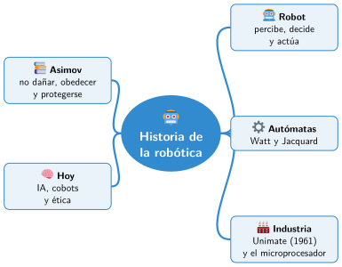

Bloque I · Robótica y sociedad
UD01 Historia de la robótica y los sistemas de control
Sesiones
- Sesión 1.1 Qué es un robot y qué es un sistema de control
- Sesión 1.2 Autómatas y máquinas automáticas antes de la electrónica
- Sesión 1.3 La robótica industrial y la era del microprocesador
- Sesión 1.4 Las tres leyes de la robótica de Asimov
- Sesión 1.5 Presente y futuro: inteligencia artificial, robots colaborativos y ética
Al terminar la unidad
Mapa mental de la unidad

✏️ Repasa la unidad con el mapa: tapa una rama y explica en voz alta lo que pone.